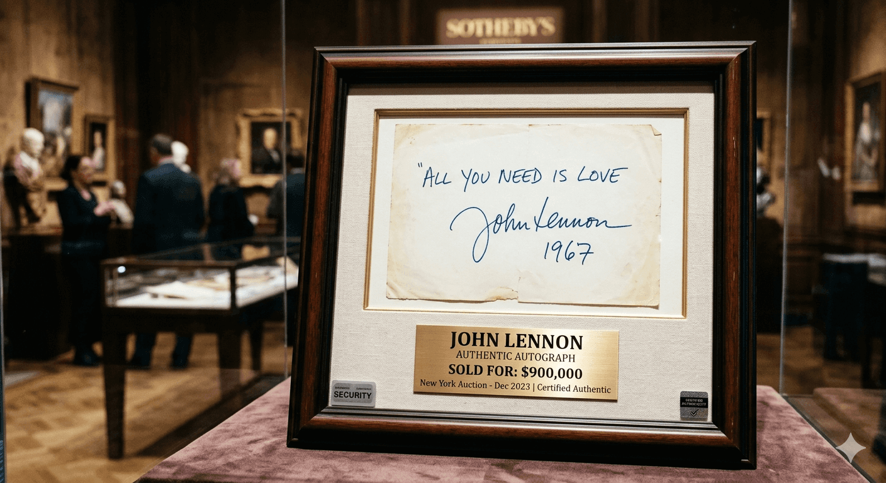

Predstavte si predmet, ktorý v sebe nesie posledné sekundy šťastia svetovej legendy a zároveň mrazivý dych jeho konca. Nie je to drahokam ani zlatá soška. Je to obyčajný obal vinylovej platne s narýchlo čmáraným podpisom. Cena? Šialených 825 000 eur.
Tento kus kartónu a vinylu je totiž nemým svedkom jednej z najväčších tragédií 20. storočia. Je to album Double Fantasy, ktorý John Lennon podpísal mužovi, ktorý ho o pár hodín neskôr pripravil o život.

Posledný podpis legendy
Bol pondelok 8. decembra 1980. John Lennon vychádzal zo svojho bytu v slávnej budove Dakota v New Yorku. Na chodníku ho pristavil nenápadný fanúšik s okuliarmi a v rukách držal čerstvý album, ktorý Lennon práve vydal.
Lennon sa zastavil, vzal pero a na obal napísal: "John Lennon, 1980". Dokonca sa muža slušne opýtal: "Je to všetko? Chceš ešte niečo?" Fanúšik len ticho prikývol. Tým mužom bol Mark David Chapman.
Tento moment zachytil aj fotograf Paul Goresh – vznikla tak jedna z posledných fotografií Johna Lennona vôbec. Na snímke pokojne podpisuje album mužovi, ktorý sa o pár hodín stane jeho vrahom.
Vrahov suvenír v kvetináči
O niekoľko hodín neskôr, keď sa Lennon vracal zo štúdia domov, Chapman na neho v tom istom vchode vystrelil päťkrát. Svet prišiel o vizionára, no na mieste činu zostal jeden bizarný dôkaz.
Chapman totiž v rozrušení po podpísaní platne tento album odložil do veľkého kvetináča pri vchode do budovy Dakota. Tam ho o niečo neskôr našiel pozorný údržbár. Album putoval priamo do rúk polície ako kľúčový dôkaz s Chapmanovými odtlačkami prstov.
Cena za dotyk smrti
Príbeh tejto platne je fascinujúci a zároveň desivý. Po tom, čo ju polícia vrátila nálezcovi (údržbárovi), sa stala najžiadanejším kúskom pre milovníkov "macabre" zberateľstva – zbierania predmetov spojených s tragédiami.
- V roku 1999: Album sa predal za približne 140 000 €.
- V roku 2010: Cena vyskočila na 500 000 €.
- Dnes: Hodnota sa odhaduje na viac ako 825 000 € (900 000 $).
Na obale sú dodnes viditeľné policajné značky a dôkazové nálepky – čo z neho nerobí len zberateľský predmet, ale doslova artefakt z miesta činu. Je to suverénne najdrahší podpísaný album v histórii. Žiadna iná nahrávka Beatles alebo Lennona sa k tejto sume ani nepribližuje.
Double Fantasy mal byť oslavou nového začiatku a návratu k tvorbe. Namiesto toho sa tento konkrétny kus vinylu stal bodkou za jednou érou. Je to fascinujúci, no zároveň desivý paradox: predmet určený na rozdávanie radosti sa premenil na nemého svedka násilia, ktorý aj po desaťročiach vyvoláva rovnakú úzkosť ako v osudný decembrový večer.
Imagine an object that carries within it the final seconds of a global legend's happiness and, simultaneously, the chilling breath of his end. It is not a gemstone or a golden statuette. It is an ordinary vinyl record sleeve with a hastily scribbled signature. The price? A staggering 825,000 euros.
This piece of cardboard and vinyl is a silent witness to one of the greatest tragedies of the 20th century. It is the Double Fantasy album that John Lennon signed for the man who, just hours later, would take his life.
The Legend's Final Signature
It was Monday, December 8, 1980. John Lennon was leaving his apartment in the famous Dakota building in New York. On the sidewalk, he was stopped by an unassuming fan with glasses, holding the fresh album Lennon had just released.
Lennon stopped, took a pen, and wrote on the cover: "John Lennon, 1980." He even politely asked the man: "Is that all? Do you want anything else?" The fan just nodded silently. That man was Mark David Chapman.
This moment was captured by photographer Paul Goresh—resulting in one of the last photographs of John Lennon ever taken. In the image, he calmly signs the album for the man who, in a few hours, would become his murderer.
The Killer’s Souvenir in a Planter
Hours later, as Lennon was returning home from the studio, Chapman fired five shots at him in that same entrance. The world lost a visionary, but one bizarre piece of evidence remained at the crime scene.
In his agitation after getting the autograph, Chapman had tucked the album into a large planter near the entrance of the Dakota. An observant maintenance worker found it there a short while later. The album went straight to the police as key evidence, complete with Chapman’s fingerprints.
The Price for a Touch of Death
The story of this record is both fascinating and terrifying. After the police returned it to the finder (the maintenance worker), it became the most sought-after piece for lovers of "macabre" collecting—the gathering of items associated with tragedies.
- In 1999: The album sold for approximately €140,000.
- In 2010: The price jumped to €500,000.
- Today: The value of this specimen is estimated at over €825,000 ($900,000).
To this day, police markings and evidence stickers are still visible on the cover—making it not just a collector's item, but literally an artifact from a crime scene. It is by far the most expensive signed album in history. No other Beatles or Lennon recording comes anywhere close to this figure.
Double Fantasy was meant to be a celebration of a new beginning and a return to creativity. Instead, this specific piece of vinyl became the full stop at the end of an era. It is a fascinating yet terrifying paradox: an object intended to spread joy transformed into a silent witness to violence, evoking the same anxiety today as it did on that fateful December evening.
Stellen Sie sich einen Gegenstand vor, der die letzten Sekunden des Glücks einer Weltlegende und gleichzeitig den eisigen Hauch seines Endes in sich trägt. Es ist kein Edelstein und keine goldene Statue. Es ist eine gewöhnliche Plattenhülle aus Vinyl mit einer hastig hingekritzelten Unterschrift. Der Preis? Wahnsinnige 825.000 Euro.
Dieses Stück Karton und Vinyl ist ein stummer Zeuge einer der größten Tragödien des 20. Jahrhunderts. Es ist das Album Double Fantasy, das John Lennon jenem Mann signierte, der ihm nur wenige Stunden später das Leben nehmen sollte.
Die letzte Unterschrift der Legende
Es war Montag, der 8. Dezember 1980. John Lennon verließ seine Wohnung im berühmten Dakota-Gebäude in New York. Auf dem Gehweg hielt ihn ein unscheinbarer Fan mit Brille an, der das frisch erschienene Album von Lennon in den Händen hielt.
Lennon hielt inne, nahm einen Stift und schrieb auf das Cover: „John Lennon, 1980“. Er fragte den Mann sogar höflich: „Ist das alles? Möchtest du noch etwas?“ Der Fan nickte nur stumm. Dieser Mann war Mark David Chapman.
Diesen Moment hielt auch der Fotograf Paul Goresh fest – so entstand eines der letzten Fotos von John Lennon überhaupt. Auf dem Bild signiert er seelenruhig das Album für den Mann, der nur wenige Stunden später zu seinem Mörder werden sollte.
Das Souvenir des Mörders im Blumenkübel
Als Lennon einige Stunden später aus dem Studio nach Hause zurückkehrte, feuerte Chapman im selben Eingangsbereich fünf Schüsse auf ihn ab. Die Welt verlor einen Visionär, doch am Tatort blieb ein bizarres Beweisstück zurück.
Chapman hatte das Album nach der Signierung in seiner Aufregung in einem großen Blumenkübel am Eingang des Dakota-Gebäudes deponiert. Dort wurde es wenig später von einem aufmerksamen Hausmeister gefunden. Das Album ging als wichtiges Beweismittel mit Chapmans Fingerabdrücken direkt in die Hände der Polizei.
Der Preis für die Berührung des Todes
Die Geschichte dieser Platte ist ebenso faszinierend wie erschreckend. Nachdem die Polizei sie dem Finder (dem Hausmeister) zurückgegeben hatte, wurde sie zum begehrtesten Stück für Liebhaber des „Makabren“ – dem Sammeln von Gegenständen, die mit Tragödien verbunden sind.
- Im Jahr 1999: Das Album wurde für etwa 140.000 € verkauft.
- Im Jahr 2010: Der Preis stieg auf 500.000 €.
- Heute: Der Wert dieses Exemplars wird auf über 825.000 € (900.000 $) geschätzt.
Auf dem Cover sind bis heute Polizeimarkierungen und Beweisaufkleber sichtbar – was es nicht nur zu einem Sammlerstück, sondern buchstäblich zu einem Artefakt vom Tatort macht. Es ist das mit Abstand teuerste signierte Album der Geschichte. Keine andere Aufnahme der Beatles oder von Lennon kommt auch nur annähernd an diese Summe heran.
Double Fantasy sollte ein Fest des Neuanfangs und der Rückkehr zum Schaffen sein. Stattdessen wurde dieses spezielle Stück Vinyl zum Schlusspunkt einer Ära. Es ist ein faszinierendes, aber auch beängstigendes Paradoxon: Ein Gegenstand, der Freude bereiten sollte, verwandelte sich in einen stummen Zeugen von Gewalt, der auch nach Jahrzehnten die gleiche Beklemmung auslöst wie an jenem schicksalhaften Dezemberabend.